Los ángeles lo traicionaron. Dios le dio una última oportunidad.
La redención se gana a golpes.
▾
Los ángeles lo traicionaron. Dios le dio una última oportunidad.
La redención se gana a golpes.
Plataformas y acción, a la vieja usanza
Gorfus el Redentor es un scroller de plataformas y acción inspirado en los arcades clásicos de los 80 y principios de los 90. Se avanza de izquierda a derecha, saltando trampas y golpeando enemigos con un báculo sagrado, enfrentando un jefe al final de cada etapa. Sin checkpoints regalados ni vidas infinitas: cada golpe cuenta, cada salto se mide.
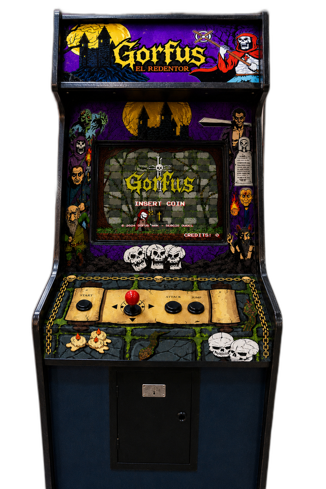
Gorfus el Redentor se puede jugar en PC y otras plataformas, pero su forma definitiva es el gabinete arcade original: un mueble de pie con arte exclusivo, joystick y botones físicos, tal como se jugaba en los salones recreativos de antaño.
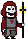

Gorfus Bernadac, monje exorcista descendiente de una antigua dinastía de cazadores de demonios, fue víctima de una trampa tejida por los propios ángeles. Movidos por los celos y la envidia, lo acusaron injustamente ante el trono divino.
Condenado a vagar entre la vida y la muerte, despojado de su carne y reducido a una calavera encapuchada, Gorfus perdió todo... menos su fe.
Pero Dios le concedió una última oportunidad: superar las pruebas divinas, abrirse paso entre hordas de entes paranormales, derrotar a los ángeles corruptos que conspiraron contra él y enfrentar a los Reyes del Infierno.
Armado con su báculo-crucifijo y el poder de los salmos, cada victoria lo acerca a la verdad... y a la redención que podría devolverle su forma humana.
Un monje entre la vida y la muerte

Nadie sabe qué aspecto tendrá Gorfus cuando complete las pruebas divinas y recupere su humanidad. Su verdadera forma permanece oculta tras las sombras... y solo quienes lleguen al final del viaje la conocerán. La redención no se pide. Se gana.
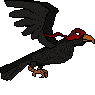
El carroñero gigante que eligió el bando del monje. Donde otros ven un ave de mal agüero, Gorfus encontró un compañero leal: Khan vigila los cielos de las tierras malditas y acude cuando el Redentor lo necesita.
Ángeles corruptos y Reyes del Infierno — cada etapa termina frente a uno de ellos
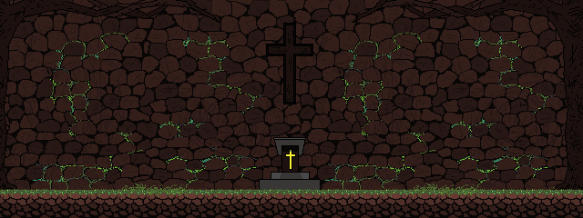
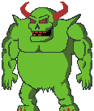
Amo de la maleza que devora los muros. Donde él pisa, la piedra se pudre y la hiedra estrangula.
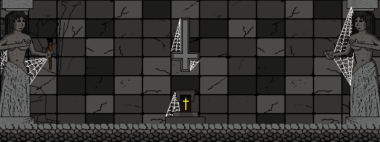
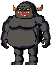
Se funde en las sombras y reaparece donde menos lo esperás. Sus embestidas parten la piedra en dos.
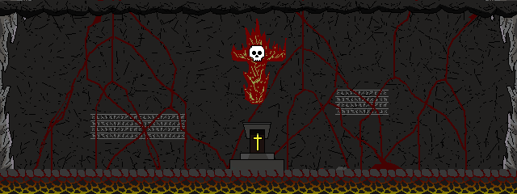
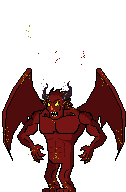
🔒 Bloqueado — superá este nivel en el juego para revelarlo
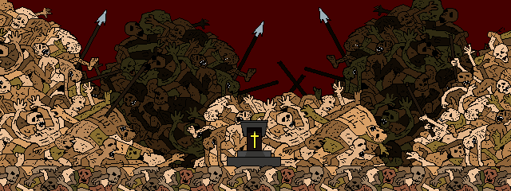
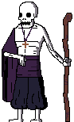
🔒 Bloqueado — superá este nivel en el juego para revelarlo
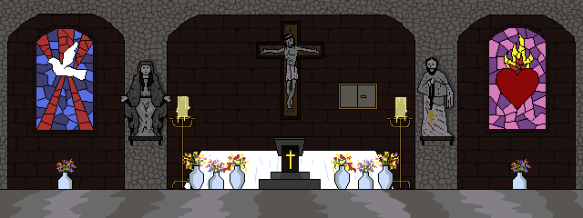
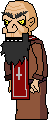
🔒 Bloqueado — superá este nivel en el juego para revelarlo
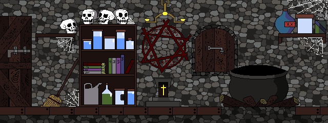
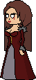
🔒 Bloqueado — superá este nivel en el juego para revelarlo
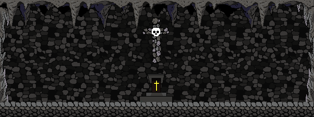
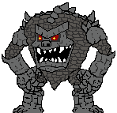
🔒 Bloqueado — superá este nivel en el juego para revelarlo
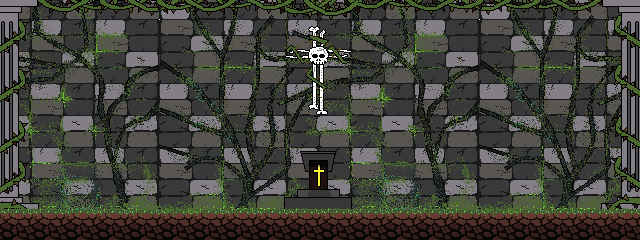
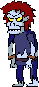
🔒 Bloqueado — superá este nivel en el juego para revelarlo
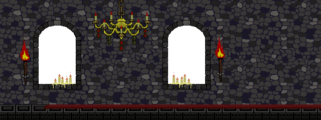
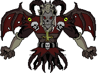
🔒 Bloqueado — superá este nivel en el juego para revelarlo
Cada jefe derrotado devuelve a Gorfus un fragmento de su humanidad.
Todo lo que se mueve quiere matarte
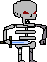
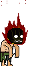
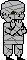
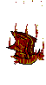
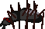
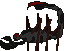
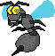

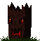
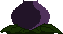
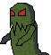
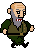
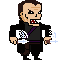
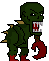
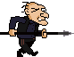
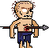
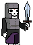

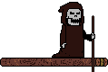
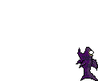
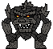
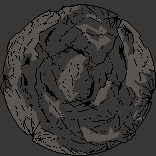
El mapa de la penitencia — cada prueba termina frente a un jefe
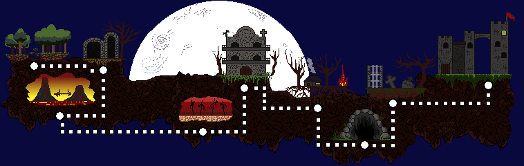
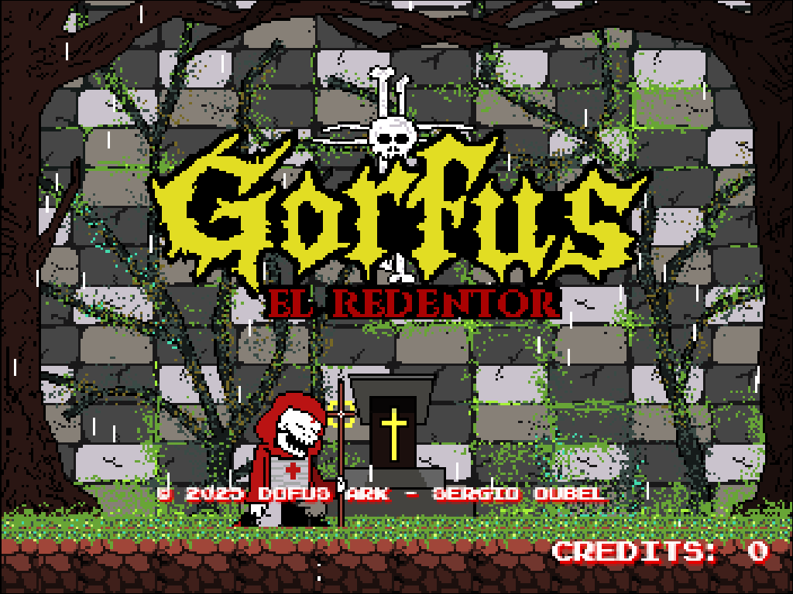
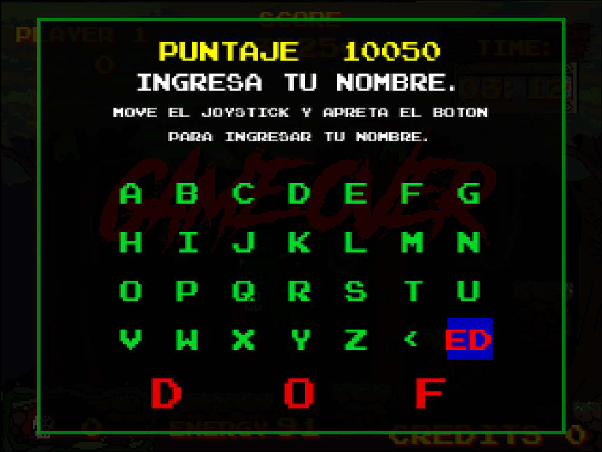
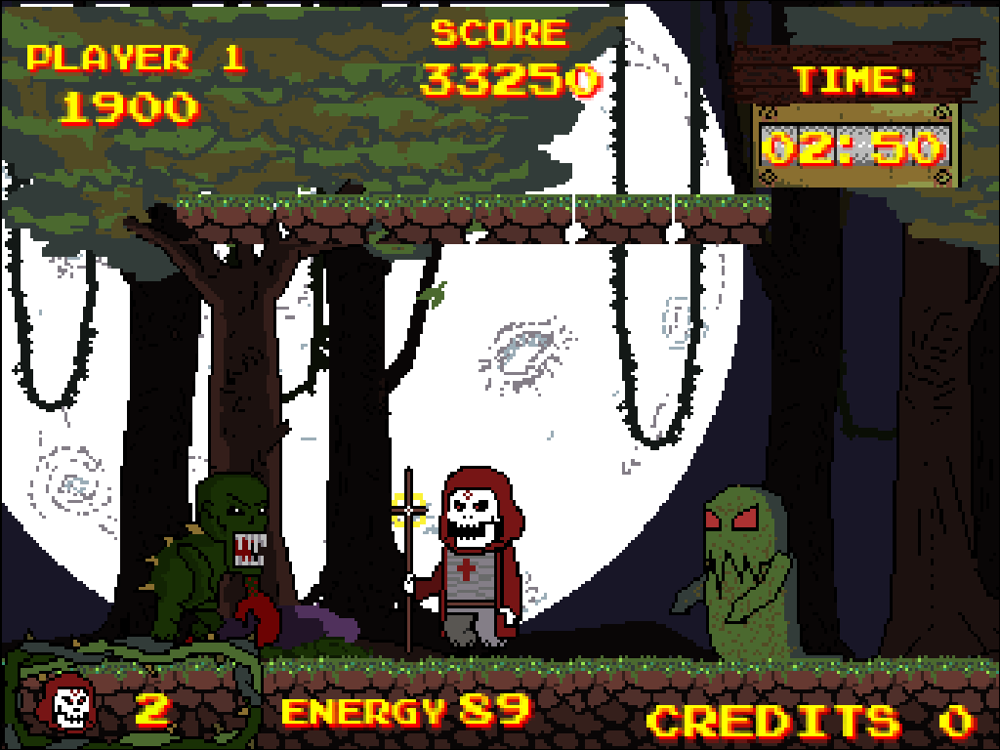
La entrada al viaje de Gorfus: árboles retorcidos y una maleza que parece respirar. Algo ahí abajo hace que la tierra se pudra a su paso.
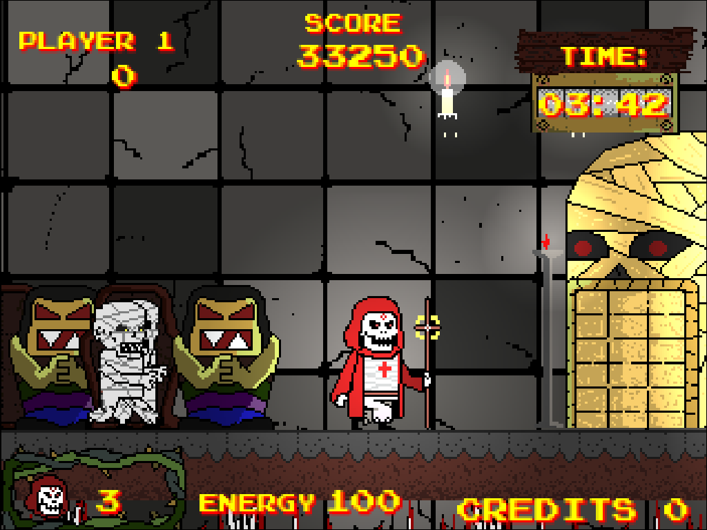
Pasillos de piedra apilados sobre huesos ajenos. Un peso antiguo se arrastra entre las criptas, más grande que cualquier tumba.
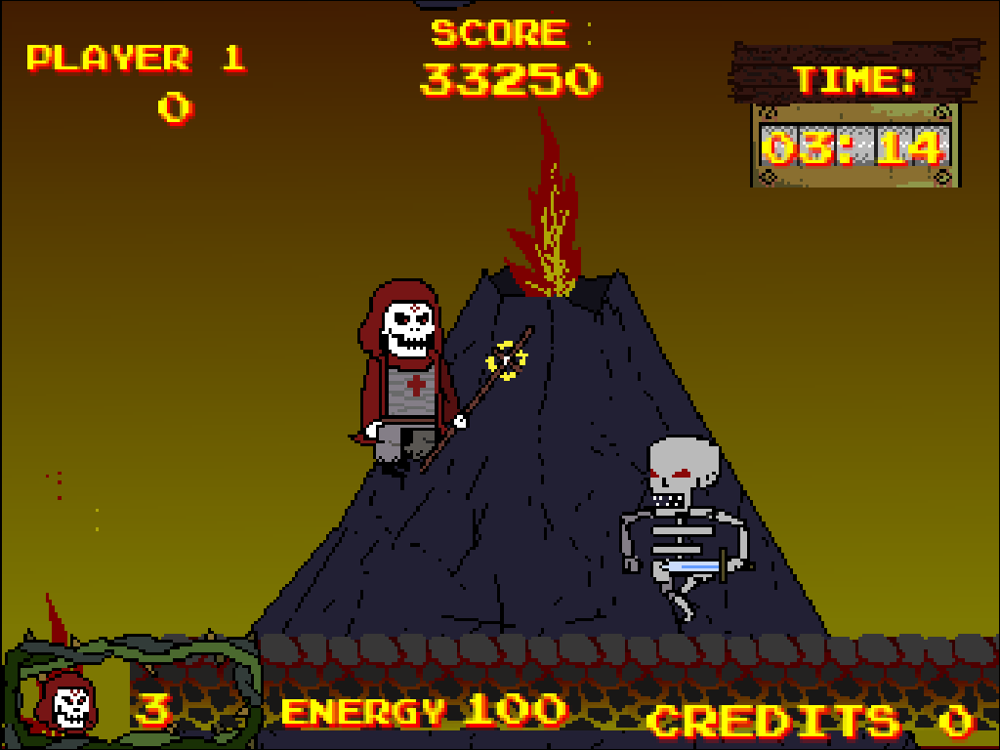
El calor lo anuncia antes que la vista: una fosa ardiente donde algo forjado en fuego espera para heraldar el fin de Gorfus.
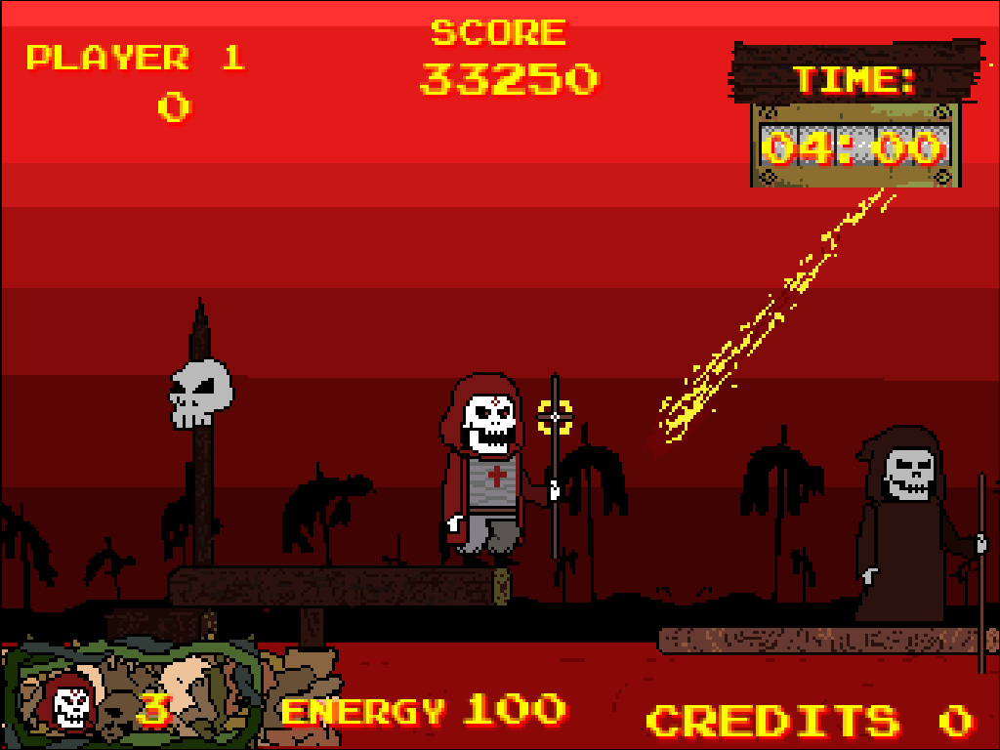
Un tribunal sin jueces vivos. Aquí cada pecado se pesa, y algo con memoria de huesos dicta la sentencia final.
Cánticos rotos resuenan entre las ruinas. Un falso predicador guía a los que ya no pueden rezar por sí mismos.
Una noche que nunca amanece. Entre las sombras, una hechicera escarlata teje sortilegios que Gorfus deberá cortar de raíz.
Roca viva y silencio de piedra. En lo más hondo de la abadía enterrada, algo hecho de la propia montaña aguarda despertar.
Lápidas que ya conocen tu nombre. Los muertos aquí no descansan del todo, y su rey ahorcado los mantiene de pie.
La entrada final. Tras estos muros no hay más escenarios que cruzar, solo la subida que decide si Gorfus se redime... o cae para siempre.
El juego te entrega un código al superar cada prueba. Ingresalo acá para revelar la siguiente.
Acción arcade como en los salones de los 80
Probá el primer escenario. Los demás niveles quedan como "Gorfus Legendario" hasta que los desbloquees con el código que te da el juego.
El juicio, en movimiento
La banda sonora de la penitencia — compuesta al estilo de los chips clásicos
Panel de mando de la abadía

Arte del mundo de Gorfus — clic para ampliar